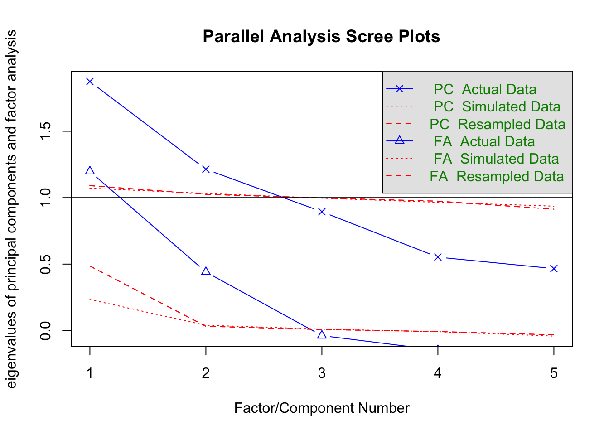
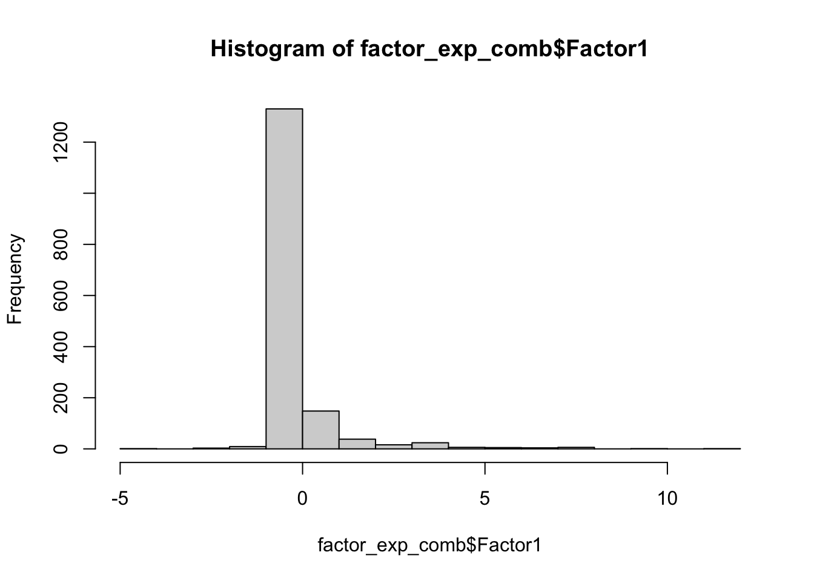
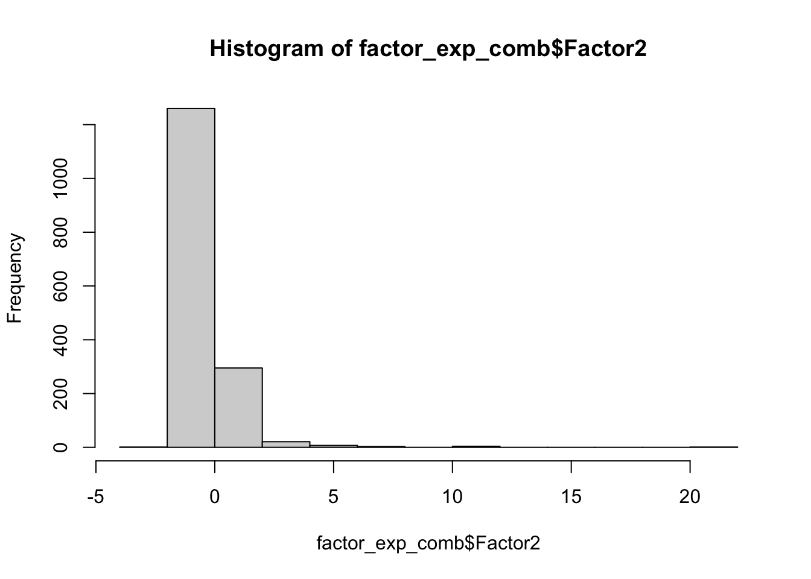
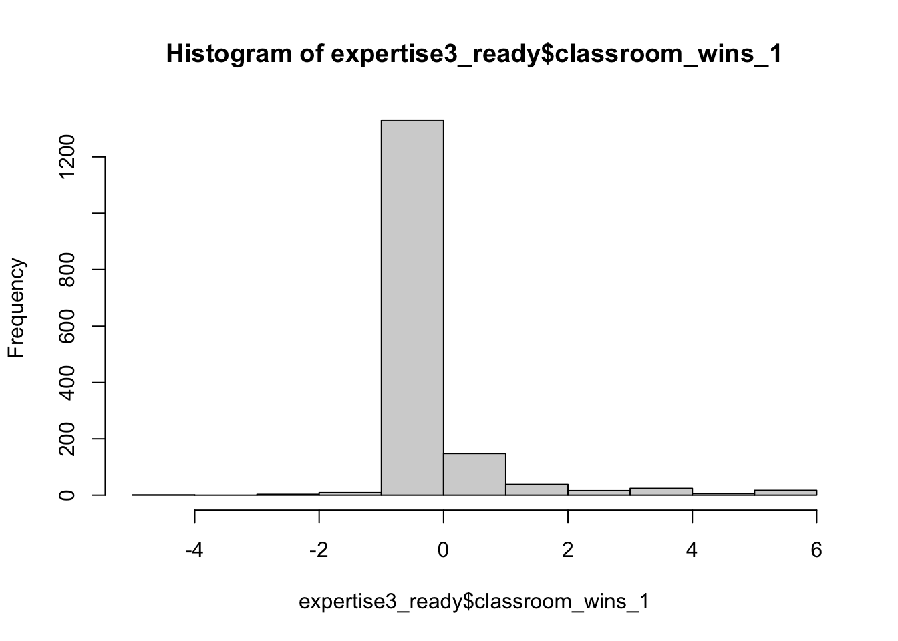
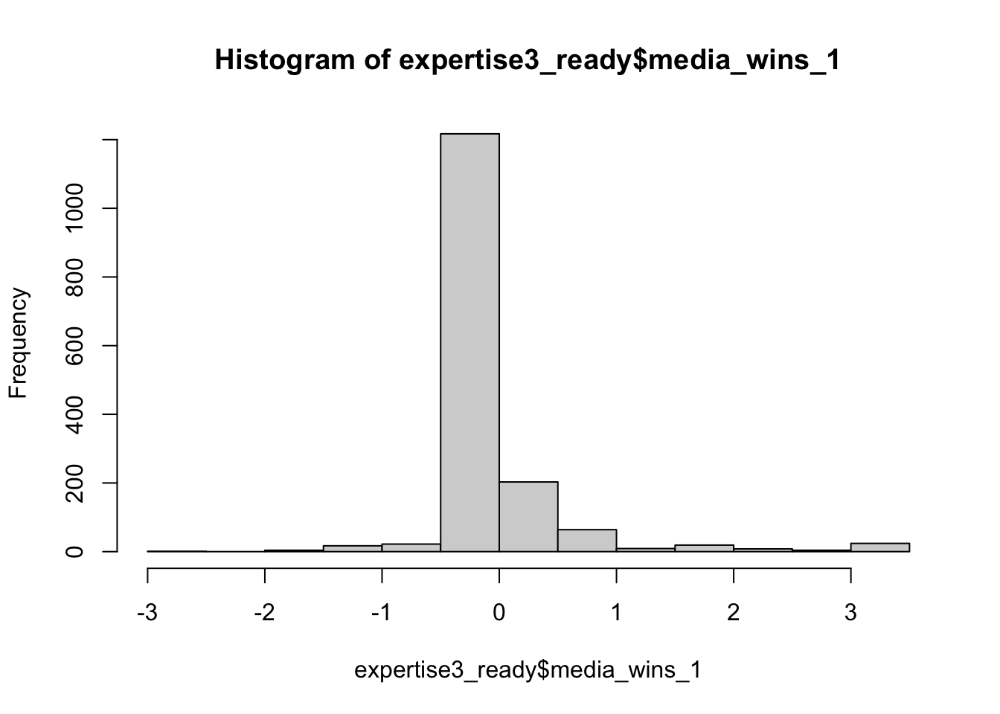
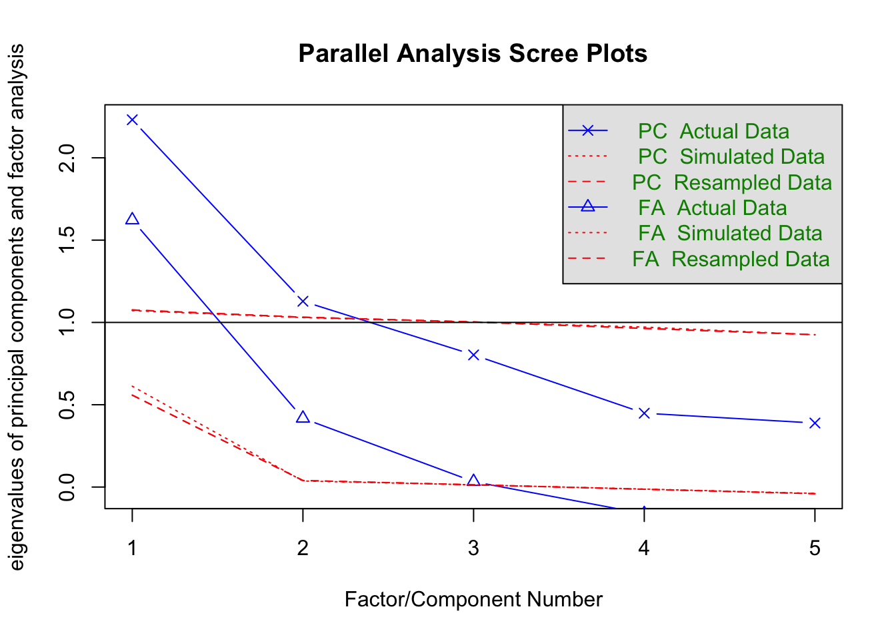
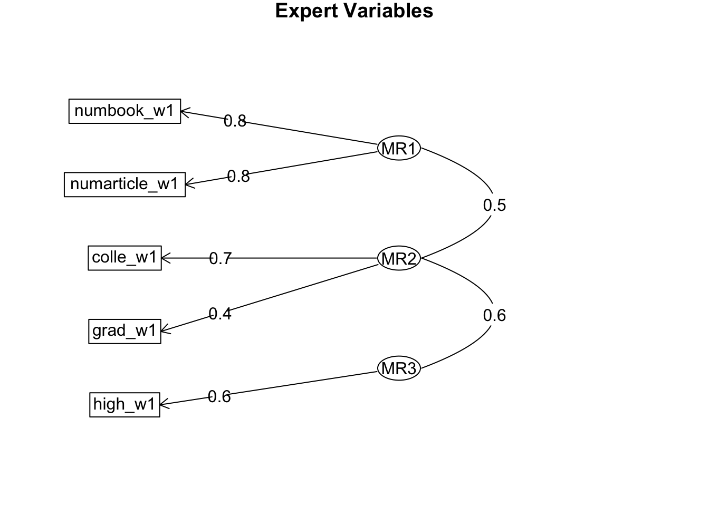
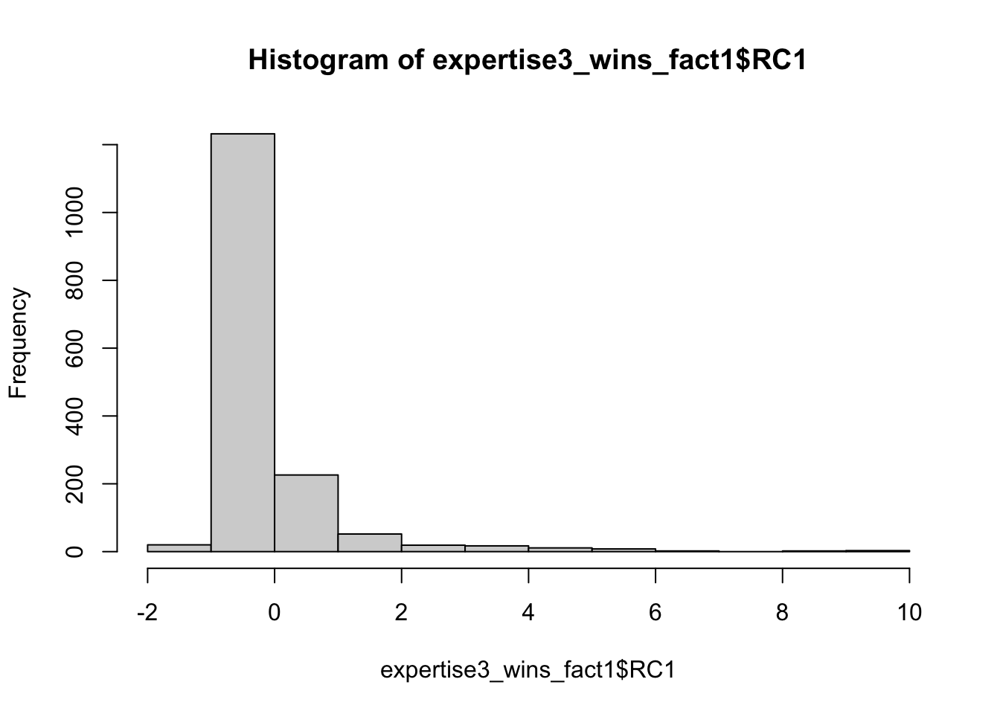
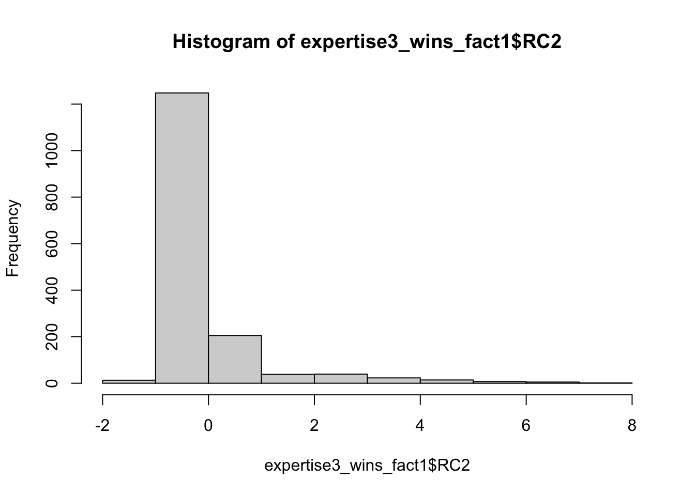

#Import library ----
library(tidyverse)
library(readr)
library(purrr)
library(jmv)
library(psych)
library(DescTools)
library(stats)
library(factoextra)
#Read the csv file ----
Expertise3 <- read_csv("~/Desktop/Expertise3_December 23, 2022_10.53.csv")This post includes the trial analyses of an example data related to expertise.
Import necessary packages and expertise data
Creates a new dataframe called expertise3_clean, which is a copy of the original dataframe called Expertise3 and removes the second row of the dataframe and create a variable called column_names and assign it the names of the columns in the dataframe and change the column names
#removes the second row of the dataframe
expertise3_clean<-Expertise3%>%
slice(-2)
#selects all columns except the ones listed
expertise3_clean <- expertise3_clean %>%
select(-StartDate, -EndDate, -Status, -Progress,-ResponseId,-RecordedDate,-RecipientLastName, -RecipientFirstName,-RecipientEmail, -ExternalReference, -LocationLatitude,-LocationLongitude, -DistributionChannel, -UserLanguage)
#create a variable called column_names and assign it the names of the columns in the dataframe
column_names <- names(expertise3_clean)
##Change the column names ----
colnames(expertise3_clean) <- c('ip','duration', 'finished', 'stih_lang','r_ih_lang','stih_school','r_ih_school',
'stih_cards','r_ih_cards','stih_breakfast','r_ih_breakfast','stih_weddings','r_ih_weddings',
'stih_teeth','r_ih_teeth','stih_traffic','r_ih_traffic','stih_tv','r_ih_tv',
'know_lang','know_school','know_cards','know_breakfast','know_weddings','know_teeth',
'know_traffic','know_tv',
'course_lang','high_lang', 'colle_lang', 'grad_lang',
'book_lang','numbook_lang','article_lang','numarticle_lang',
'course_school','high_school', 'colle_school', 'grad_school',
'book_school','numbook_school','article_school','numarticle_school',
'course_cards','high_cards', 'colle_cards', 'grad_cards',
'book_cards','numbook_cards','article_cards','numarticle_cards',
'course_breakfast','high_breakfast', 'colle_breakfast', 'grad_breakfast',
'book_breakfast','numbook_breakfast','article_breakfast','numarticle_breakfast',
'course_weddings','high_weddings', 'colle_weddings', 'grad_weddings',
'book_weddings','numbook_weddings','article_weddings','numarticle_weddings',
'course_teeth','high_teeth', 'colle_teeth', 'grad_teeth',
'book_teeth','numbook_teeth','article_teeth','numarticle_teeth',
'course_traffic','high_traffic', 'colle_traffic', 'grad_traffic',
'book_traffic','numbook_traffic','article_traffic','numarticle_traffic',
'course_tv','high_tv', 'colle_tv', 'grad_tv',
'book_tv','numbook_tv','article_tv','numarticle_tv',
'needforcog1','needforcog2','needforcog3','needforcog4','needforcog5','needforcog6',
'needforcog7','needforcog8','needforcog9','needforcog10','needforcog11','needforcog12',
'needforcog13','needforcog14','needforcog15','needforcog16','needforcog17','needforcog18',
'otherways','sex','birthdate','education','income','religion','identity','age','political_atti',
'english_level','proceure_confu','whatwestudied','moretothisstudy','additional_thoughts','attention')Questionnaire Items
The code below shows the survey items:
#selects all columns except the ones specified
row_values <- expertise3_clean %>%
select(-duration,-finished, -ip)%>%
#selects only the first row
filter(row_number() == 1)
#Items in the questionnaire ----
#unlist the row_values
row_values <- unlist(row_values)
my_list <- map(row_values, ~paste0(.))
library(stringr)
my_list <- str_replace(my_list, "(?<! )\\n(?! )", "")
my_list <- str_replace(my_list, "[^\\s]*\\\\n[^\\s]*", "")
list_string <- paste0("* ", paste(my_list, collapse = "\n* "))
##Show the survey items ----
cat(list_string)* Human languages are structured to best convey ourthoughts and feelings. Words and their meanings likely form ideal matches.
* There are absolutely no good reasons whywe use specific words to represent our thoughts. Any combination of sounds
could in principle refer to any idea.
* The fact that elementary school stops at 5th grade is probably ideal for children's learning. This is likely the best way to organize K-12 schooling.
* Middle school (grades 6-8) is separate from elementary school (grades K-5) largely because of decisions made by educators a long time ago. This may not be the most optimal way of organizing early education.
* It’s not a coincidence thatwe send people cards on holidays. This tradition seems
particularly fitting.
* The fact that we send people cards on holidays is only a convention. A different way of sending warm wishes could've been implemented just as easily.
* There are good reasons why orange juiceis typically consumed for breakfast. There are features about it that make it
particularly suited for this meal (for example, its refreshing taste).
* The current popularity of orange juice for breakfast reflectsin part marketing campaigns that promoted
drinking orange juice in the morning. However, had history taken a different
turn, orange juice could just as easily have been more popular for lunch or
dinner.
* It seems right to use white for wedding dresses. Othercolors, such as red and blue, have features that make them less suited for
wedding dresses.
* Even though white is thetraditional color for wedding dresses, this could have easily been different.
When you really think about it, there is no reason why other, brighter, colors couldn’t
be used for wedding dresses.
* It seems ideal that toothpaste istypically flavored with mint. Mint is inherently more refreshing than any other
flavor that currently exists.
* When you think about it, toothpaste could have easily beenflavored with something other than mint, such as cinnamon. Many pleasing flavors would work just as
well.
* Traffic lights, with threedifferent colored lights signaling three speeds, seem like the most efficient
and effective way to direct traffic. Another process likely would not work as
well.
* The current design of traffic lights,with three different colors reflecting three different speeds, is entirely due
to historical factors. This is probably not the most efficient or effective way
to manage traffic.
* Black seems like a good choice for the color of televisions. Other colors just would not work as well.
* Theonly reason why most TVs are black is
historical happenstance. TVs could practically be a
variety of colors.
* How much do you know about language and linguistics? - Please use the slider to select your answer choice.
* How much do you know about school and education systems? - Please use the slider to select your answer choice.
* How much do you know about holiday customs and traditions? - Please use the slider to select your answer choice.
* How much do you know about breakfast foods? - Please use the slider to select your answer choice.
* How much do you know about weddings and wedding traditions? - Please use the slider to select your answer choice.
* How much do you know about teeth and oral hygiene? - Please use the slider to select your answer choice.
* How much do you know about transportation science and traffic signal systems? - Please use the slider to select your answer choice.
* How much do you know about the manufacturing of consumer electronics (TVs, MP3 players, camcorders, etc.)? - Please use the slider to select your answer choice.
* Have you ever taken a class that discussed language and linguistics?
* If you answered "yes" above, please approximate the number of classes of this sort you took in: - High School
* If you answered "yes" above, please approximate the number of classes of this sort you took in: - College
* If you answered "yes" above, please approximate the number of classes of this sort you took in: - Graduate School
* Have you ever read any books on language and linguistics?
* If you answered "yes" above, please approximate the number of books you have read on this topic:
* Have you ever read any magazine, newspaper, or academic articles on language and linguistics?
* If you answered "yes" above, please approximate the number of articles you have read on this topic:
* Have you ever taken a class that discussed school and education systems?
* If you answered "yes" above, please approximate the number of classes of this sort you took in: - High School
* If you answered "yes" above, please approximate the number of classes of this sort you took in: - College
* If you answered "yes" above, please approximate the number of classes of this sort you took in: - Graduate School
* Have you ever read any books on school and education systems?
* If you answered "yes" above, please approximate the number of books you have read on this topic:
* Have you ever read any magazine, newspaper, or academic articles on school and education systems?
* If you answered "yes" above, please approximate the number of articles you have read on this topic:
* Have you ever taken a class that discussed holiday customs and traditions?
* If you answered "yes" above, please approximate the number of classes of this sort you took in: - High School
* If you answered "yes" above, please approximate the number of classes of this sort you took in: - College
* If you answered "yes" above, please approximate the number of classes of this sort you took in: - Graduate School
* Have you ever read any books on holiday customs and traditions?
* If you answered "yes" above, please approximate the number of books you have read on this topic:
* Have you ever read any magazine, newspaper, or academic articles on holiday customs and traditions?
* If you answered "yes" above, please approximate the number of articles you have read on this topic:
* Have you ever taken a class that discussed breakfast foods?
* If you answered "yes" above, please approximate the number of classes of this sort you took in: - High School
* If you answered "yes" above, please approximate the number of classes of this sort you took in: - College
* If you answered "yes" above, please approximate the number of classes of this sort you took in: - Graduate School
* Have you ever read any books on breakfast foods?
* If you answered "yes" above, please approximate the number of books you have read on this topic:
* Have you ever read any magazine, newspaper, or academic articles on breakfast foods?
* If you answered "yes" above, please approximate the number of articles you have read on this topic:
* Have you ever taken a class that discussed weddings and wedding traditions?
* If you answered "yes" above, please approximate the number of classes of this sort you took in: - High School
* If you answered "yes" above, please approximate the number of classes of this sort you took in: - College
* If you answered "yes" above, please approximate the number of classes of this sort you took in: - Graduate School
* Have you ever read any books on weddings and wedding traditions?
* If you answered "yes" above, please approximate the number of books you have read on this topic:
* Have you ever read any magazine, newspaper, or academic articles on weddings and wedding traditions?
* If you answered "yes" above, please approximate the number of articles you have read on this topic:
* Have you ever taken a class that discussed teeth and oral hygiene?
* If you answered "yes" above, please approximate the number of classes of this sort you took in: - High School
* If you answered "yes" above, please approximate the number of classes of this sort you took in: - College
* If you answered "yes" above, please approximate the number of classes of this sort you took in: - Graduate School
* Have you ever read any books on teeth and oral hygiene?
* If you answered "yes" above, please approximate the number of books you have read on this topic:
* Have you ever read any magazine, newspaper, or academic articles on teeth and oral hygiene?
* If you answered "yes" above, please approximate the number of articles you have read on this topic:
* Have you ever taken a class that discussed transportation science and traffic signal systems?
* If you answered "yes" above, please approximate the number of classes of this sort you took in: - High School
* If you answered "yes" above, please approximate the number of classes of this sort you took in: - College
* If you answered "yes" above, please approximate the number of classes of this sort you took in: - Graduate School
* Have you ever read any books on transportation science and traffic signal systems?
* If you answered "yes" above, please approximate the number of books you have read on this topic:
* Have you ever read any magazine, newspaper, or academic articles on transportation science and traffic signal systems?
* If you answered "yes" above, please approximate the number of articles you have read on this topic:
* Have you ever taken a class that discussed the manufacturing of consumer electronics (TVs, MP3 players, camcorders, etc.)?
* If you answered "yes" above, please approximate the number of classes of this sort you took in: - High School
* If you answered "yes" above, please approximate the number of classes of this sort you took in: - College
* If you answered "yes" above, please approximate the number of classes of this sort you took in: - Graduate School
* Have you ever read any books on the manufacturing of consumer electronics (TVs, MP3 players, camcorders, etc.)?
* If you answered "yes" above, please approximate the number of books you have read on this topic:
* Have you ever read any magazine, newspaper, or academic articles on the manufacturing of consumer electronics (TVs, MP3 players, camcorders, etc.)?
* If you answered "yes" above, please approximate the number of articles you have read on this topic:
* I would prefer complex to simple problems.
* I like to have the responsibility of handling a situation that requires a lot of thinking.
* Thinking is not my idea of fun.
* I would rather do something that requires little thought than something that is sure to challenge my thinking abilities.
* I try to anticipate and avoid situations where there is a likely chance I will have to think in depth about something.
* I find satisfaction in deliberating hard and long for hours.
* I only think as hard as I have to.
* I prefer to think about small, daily projects rather than long-term ones.
* I like tasks that require little thought once I’ve learned them.
* The idea of relying on thought to make my way to the top appeals to me.
* I really enjoy a task that involves coming up with new solutions to problems.
* Learning new ways to think doesn’t excite me very much.
* I prefer my life to be filled with puzzles that I must solve.
* The notion of thinking abstractly appeals to me.
* I would prefer a task that is intellectual, difficult, and important to one that is somewhat important but does not require much thought.
* I feel relief rather than satisfaction after completing a task that required a lot of mental effort.
* It’s enough for me that something gets the job done; I don’t care about why or how it works.
* I usually end up deliberating about issues even when they do not affect me personally.
* In this survey you were asked about your knowledge in a variety of subject areas.
Aside from the ways you may have learned about these topics that were mentioned in the survey (i.e., reading or a college class), how else may you have learned about these topics? Please name other ways that you have learned about the topics mentioned in the survey you just took.
* Are you male or female?
* Q60 - What is your date of birth? (mm/dd/yyyy)
* What is the highest level of education you have completed?
* Q64 - What is your yearly household income?
* Q64 - What is your religious affiliation?
* Q64 - What is your racial or ethnic identity?
* Q64 - What is your age in years?
* How would you describe your political attitudes? Please select one of the points on the scale below.
* Please rate your overall ability in the English language:
* 1. Did you find any aspect of the procedure odd or confusing?
* 2. What did you think we were studying?
* 3. Do you think that there may have been more to this study than meets the eye? If so, what do you think this might have been?
* 4. Do you have any additional thoughts or comments about the study?
* Thank you for completing this survey! We just have one last question for you. You will not be penalized for your answer to this question. Since you completed the whole survey, you will receive payment no matter what answer you give here.
It's very important to the quality and scientific aims of our study that participants pay attention (i.e., read the survey carefully, consider the response options, and avoid distractions).
Were you paying attention while completing this survey?Exclusion Criterias
Data preparation for further analyses
#Attention check and deletion of cases that didn't attend or finish the study ----
expertise3_new<-expertise3_clean%>%
filter(attention==1&finished==1)
##Exclude the participants that joined outside of US ----
#view(expertise3_new)
expertise3_new<-expertise3_new%>%
filter(ip!="37.221.172.194")
expertise3_new <- expertise3_new %>%
filter(!(ip %in% c("77.198.10.26", "83.233.218.246", "189.172.66.106", "190.167.6.137")))
##selecting the columns that we want to keep ----
expertise3_new<-expertise3_new%>%
select(-finished,-otherways,-birthdate,-proceure_confu,-whatwestudied,-moretothisstudy,-additional_thoughts,-attention)
#adds a column to the dataframe, with the name "id"
expertise3_new<-cbind(ID = 1:nrow(expertise3_new), expertise3_new)
# Numeric variables ----
# Change the data type of the variables to numeric
expertise3_new <- expertise3_new %>%
mutate_at(vars(stih_lang, r_ih_lang, stih_school, r_ih_school, stih_cards, r_ih_cards, stih_breakfast, r_ih_breakfast,
stih_weddings, r_ih_weddings, stih_teeth, r_ih_teeth, stih_traffic, r_ih_traffic, stih_tv, r_ih_tv), as.numeric)Correlation for ih scores
Check the correlations between inherence (the variables starting with st) and reverse inherence (the variables starting with r) scores to check whether it’s appropriate for averaging
# Correlations between ih scores ----
# Create a list of variable names
variables <- c("stih_lang", "r_ih_lang", "stih_school", "r_ih_school", "stih_cards", "r_ih_cards", "stih_breakfast", "r_ih_breakfast", "stih_weddings", "r_ih_weddings", "stih_teeth", "r_ih_teeth", "stih_traffic", "r_ih_traffic", "stih_tv", "r_ih_tv")
# Initialize an empty data frame to store the correlation coefficients
correlations <- data.frame(variable1 = character(), variable2 = character(), correlation = numeric(), p.value = numeric(), conf.int = character())
# Iterate over the pairs of variables
for (i in seq(1, length(variables), 2)) {
j <- i + 1
# Calculate the Pearson correlation coefficient and test the statistical significance
correlation_test <- cor.test(expertise3_new[, variables[i]], expertise3_new[, variables[j]], method = "pearson")
# Add the correlation coefficient, p-value, and confidence interval to the data frame
correlations <- rbind(correlations, data.frame(variable1 = variables[i], variable2 = variables[j], correlation = correlation_test$estimate, p.value = correlation_test$p.value, conf.int = paste(correlation_test$conf.int[1], correlation_test$conf.int[2], sep = " - ")))}
## View the correlation coefficients and statistical measures ----
correlations variable1 variable2 correlation p.value
cor stih_lang r_ih_lang -0.6112615 8.942654e-22
cor1 stih_school r_ih_school -0.5181904 4.547542e-15
cor2 stih_cards r_ih_cards -0.5395115 2.001074e-16
cor3 stih_breakfast r_ih_breakfast -0.3813141 2.751024e-08
cor4 stih_weddings r_ih_weddings -0.5222404 2.554910e-15
cor5 stih_teeth r_ih_teeth -0.4231281 5.283701e-10
cor6 stih_traffic r_ih_traffic -0.4832966 4.822560e-13
cor7 stih_tv r_ih_tv -0.3396313 9.221208e-07
conf.int
cor -0.691555186062648 - -0.516045968176506
cor1 -0.613091701381407 - -0.40854648901427
cor2 -0.631233272015308 - -0.432907170777665
cor3 -0.494193465446722 - -0.255790470305453
cor4 -0.61654545073014 - -0.413161868080018
cor5 -0.531226389630016 - -0.301474099514304
cor6 -0.583183953827757 - -0.36901235203396
cor7 -0.457126840023376 - -0.210484471909784IH scores calculation
It seems that each pairs have negative significant correlation, so we can take the average scores to calculate inherence scores
## Average of ih scores ----
#It seems that each pairs have negative significant correlation, so we can take the average scores to measure inherence scores
expertise3_new <- expertise3_new %>%
mutate(ih_lang = (stih_lang + (10 - r_ih_lang))/2,
ih_school = (stih_school + (10 - r_ih_school)) / 2,
ih_cards = (stih_cards + (10 - r_ih_cards)) / 2,
ih_breakfast = (stih_breakfast + (10 - r_ih_breakfast)) / 2,
ih_weddings = (stih_weddings + (10 - r_ih_weddings)) / 2,
ih_teeth = (stih_teeth + (10 - r_ih_teeth)) / 2,
ih_traffic = (stih_traffic + (10-r_ih_traffic)) / 2,
ih_tv = (stih_tv + (10-r_ih_tv)) / 2 )Need for Cognition scores calculation
Calculate “Need for cognition” scale scores
# Need for cognition scale scores ----
# change the data type of the variables to numeric
expertise3_new <- expertise3_new %>%
mutate_at(vars(needforcog1,needforcog2,needforcog3,needforcog4,needforcog5,needforcog6
,needforcog7,needforcog8,needforcog9,needforcog10,needforcog11,needforcog12,
needforcog13,needforcog14,needforcog15,needforcog16,needforcog17,needforcog18), as.numeric)
## Calculate needforcog scores ----
#add a new variable called needforcog, which is the sum of all the need for cognition items, the items are weighted according to the scoring key
expertise3_new <- expertise3_new %>%
group_by(ID)%>%
mutate(needforcog=(needforcog1+needforcog2+
(10-needforcog3)+(10-needforcog4)+(10-needforcog5)+needforcog6+
(10-needforcog7)+(10-needforcog8)+(10-needforcog9)+
needforcog10+needforcog11+(10-needforcog12)+
needforcog13+needforcog14+needforcog15+
(10-needforcog16)+(10-needforcog17)+needforcog18)/18)Data preparation
Prepare the expertise scores and other scores ready for analyses
# Replace expertise variables' NA values in the expertise columns with 0 ----
variables <- c('high_lang', 'colle_lang', 'grad_lang',
'numbook_lang','numarticle_lang',
'high_school', 'colle_school', 'grad_school',
'numbook_school','numarticle_school',
'high_cards', 'colle_cards', 'grad_cards',
'numbook_cards','numarticle_cards',
'high_breakfast', 'colle_breakfast', 'grad_breakfast',
'numbook_breakfast','numarticle_breakfast',
'high_weddings', 'colle_weddings', 'grad_weddings',
'numbook_weddings','numarticle_weddings',
'high_teeth', 'colle_teeth', 'grad_teeth',
'numbook_teeth','numarticle_teeth',
'high_traffic', 'colle_traffic', 'grad_traffic',
'numbook_traffic','numarticle_traffic',
'high_tv', 'colle_tv', 'grad_tv',
'numbook_tv','numarticle_tv')
expertise3_new[variables] <- lapply(expertise3_new[variables],
function(x) ifelse(is.na(x), 0, ifelse(x=='no',0,x)))
# Missing values in the dataframe ----
apply(is.na(expertise3_new), 2, sum) ID ip duration
0 0 0
stih_lang r_ih_lang stih_school
0 0 0
r_ih_school stih_cards r_ih_cards
0 0 0
stih_breakfast r_ih_breakfast stih_weddings
0 0 0
r_ih_weddings stih_teeth r_ih_teeth
0 1 1
stih_traffic r_ih_traffic stih_tv
0 0 0
r_ih_tv know_lang know_school
0 0 0
know_cards know_breakfast know_weddings
0 0 0
know_teeth know_traffic know_tv
0 1 0
course_lang high_lang colle_lang
0 0 0
grad_lang book_lang numbook_lang
0 0 0
article_lang numarticle_lang course_school
0 0 1
high_school colle_school grad_school
0 0 0
book_school numbook_school article_school
0 0 1
numarticle_school course_cards high_cards
0 0 0
colle_cards grad_cards book_cards
0 0 0
numbook_cards article_cards numarticle_cards
0 1 0
course_breakfast high_breakfast colle_breakfast
0 0 0
grad_breakfast book_breakfast numbook_breakfast
0 0 0
article_breakfast numarticle_breakfast course_weddings
1 0 0
high_weddings colle_weddings grad_weddings
0 0 0
book_weddings numbook_weddings article_weddings
1 0 0
numarticle_weddings course_teeth high_teeth
0 0 0
colle_teeth grad_teeth book_teeth
0 0 0
numbook_teeth article_teeth numarticle_teeth
0 0 0
course_traffic high_traffic colle_traffic
0 0 0
grad_traffic book_traffic numbook_traffic
0 0 0
article_traffic numarticle_traffic course_tv
0 0 0
high_tv colle_tv grad_tv
0 0 0
book_tv numbook_tv article_tv
0 0 1
numarticle_tv needforcog1 needforcog2
0 0 0
needforcog3 needforcog4 needforcog5
0 0 0
needforcog6 needforcog7 needforcog8
0 0 0
needforcog9 needforcog10 needforcog11
0 0 0
needforcog12 needforcog13 needforcog14
0 0 0
needforcog15 needforcog16 needforcog17
0 0 0
needforcog18 sex education
0 0 0
income religion identity
2 2 0
age political_atti english_level
0 0 0
ih_lang ih_school ih_cards
0 0 0
ih_breakfast ih_weddings ih_teeth
0 0 1
ih_traffic ih_tv needforcog
0 0 0 # Expertise Ready Df ----
# Create new data frame as analyzable
expertise3_new<-expertise3_new%>%
select(-stih_lang,-r_ih_lang,-stih_school,-r_ih_school,
-stih_cards,-r_ih_cards,-stih_breakfast,-r_ih_breakfast,
-stih_weddings,-r_ih_weddings,
-stih_teeth,-r_ih_teeth,-stih_traffic,-r_ih_traffic,
-stih_tv,-r_ih_tv,
-course_lang,
-book_lang,-article_lang,
-course_school,
-book_school,-article_school,
-course_cards,
-book_cards,-article_cards,
-course_breakfast,
-book_breakfast,-article_breakfast,
-course_weddings,
-book_weddings,-article_weddings,
-course_teeth,
-book_teeth,-article_teeth,
-course_traffic,
-book_traffic,-article_traffic,
-course_tv,
-book_tv,-article_tv,
-needforcog1,-needforcog2,-needforcog3,-needforcog4,-needforcog5,-needforcog6,
-needforcog7,-needforcog8,-needforcog9,-needforcog10,-needforcog11,-needforcog12,
-needforcog13,-needforcog14,-needforcog15,-needforcog16,-needforcog17,-needforcog18)
# change the data type of the variables to numeric
expertise3_new <- expertise3_new %>%
mutate_at(vars('know_lang','know_school','know_cards','know_breakfast',
'know_weddings','know_teeth','know_traffic','know_tv',
'high_lang', 'colle_lang', 'grad_lang',
'numbook_lang','numarticle_lang',
'high_school', 'colle_school', 'grad_school',
'numbook_school','numarticle_school',
'high_cards', 'colle_cards', 'grad_cards',
'numbook_cards','numarticle_cards',
'high_breakfast', 'colle_breakfast', 'grad_breakfast',
'numbook_breakfast','numarticle_breakfast',
'high_weddings', 'colle_weddings', 'grad_weddings',
'numbook_weddings','numarticle_weddings',
'high_teeth', 'colle_teeth', 'grad_teeth',
'numbook_teeth','numarticle_teeth',
'high_traffic', 'colle_traffic', 'grad_traffic',
'numbook_traffic','numarticle_traffic',
'high_tv', 'colle_tv', 'grad_tv',
'numbook_tv','numarticle_tv'), as.numeric)Long format
Long format of expertise dataset for factor analysis
library('reshape2')
expertise3_factor <- melt(expertise3_new, id.vars = c("ID",'duration',"sex" ,"education" ,"income","religion",'identity','age','political_atti','english_level','needforcog'),
measure.vars = c("ih_lang", "ih_school","ih_cards", "ih_breakfast", "ih_weddings",
"ih_teeth", "ih_traffic", "ih_tv",'know_lang','know_school','know_cards','know_breakfast',
'know_weddings','know_teeth','know_traffic','know_tv',
'high_lang', 'colle_lang', 'grad_lang',
'numbook_lang','numarticle_lang',
'high_school', 'colle_school', 'grad_school',
'numbook_school','numarticle_school',
'high_cards', 'colle_cards', 'grad_cards',
'numbook_cards','numarticle_cards',
'high_breakfast', 'colle_breakfast', 'grad_breakfast',
'numbook_breakfast','numarticle_breakfast',
'high_weddings', 'colle_weddings', 'grad_weddings',
'numbook_weddings','numarticle_weddings',
'high_teeth', 'colle_teeth', 'grad_teeth',
'numbook_teeth','numarticle_teeth',
'high_traffic', 'colle_traffic', 'grad_traffic',
'numbook_traffic','numarticle_traffic',
'high_tv', 'colle_tv', 'grad_tv',
'numbook_tv','numarticle_tv'),
sep = "_", variable.name = "Category", value.name = "Score")
# Split the Category column into two columns based on the underscore separator
expertise3_factor <- expertise3_factor %>% separate(Category, into = c("Category", "Score_Type"), sep = "_")
## spread the data from long to wide format ----
expertise3_fact <- expertise3_factor %>% spread(Category, Score)
# change the score type to a factor
expertise3_fact$Score_Type<-as.factor(expertise3_fact$Score_Type)
# convert the column ih to numeric
expertise3_fact$ih<-as.numeric(expertise3_fact$ih)###Create another data frame to winsorize expertise variables before factor analysis
expertise3_wins_fact<-expertise3_factFactor analysis
Factor analysis for expertise variables with raw scores
# Factor analysis for expertise variables with raw scores ----
# Import packages
library(psych) #PCA/EFA analysis
library(REdaS) #Produces KMO and Bartletts test
library(GPArotation)
# Create a new dataframe that include only related variables
factor_exp<-expertise3_fact%>%
select(colle, grad, high, numarticle, numbook)
# Check missing values
apply(is.na(factor_exp), 2, sum) colle grad high numarticle numbook
0 0 0 0 0 # Since grad classes for TV category is missing (nobody takes any class in the sample), listwise deletion is applied here.
bart_spher(factor_exp, use = "complete.obs") ###### produces Bartletts test of spherecity Bartlett's Test of Sphericity
Call: bart_spher(x = factor_exp, use = "complete.obs")
X2 = 1028.145
df = 10
p-value < 2.22e-16KMO(factor_exp) ###### Kaiser-Meyer-Olkin measure, which is above .5.Kaiser-Meyer-Olkin factor adequacy
Call: KMO(r = factor_exp)
Overall MSA = 0.58
MSA for each item =
colle grad high numarticle numbook
0.57 0.59 0.56 0.56 0.60 # Let's check all the variables
fa(factor_exp, nfactors = 5, rotate = "oblimin" ) Factor Analysis using method = minres
Call: fa(r = factor_exp, nfactors = 5, rotate = "oblimin")
Standardized loadings (pattern matrix) based upon correlation matrix
MR1 MR2 MR3 MR4 MR5 h2 u2 com
colle 0.73 0.01 -0.01 0.07 0 0.56 0.44 1.0
grad -0.05 0.54 -0.05 0.08 0 0.31 0.69 1.1
high 0.73 -0.03 0.00 -0.06 0 0.51 0.49 1.0
numarticle -0.05 -0.05 0.56 0.01 0 0.28 0.72 1.0
numbook 0.14 0.37 0.38 0.06 0 0.57 0.43 2.3
MR1 MR2 MR3 MR4 MR5
SS loadings 1.11 0.53 0.52 0.08 0.00
Proportion Var 0.22 0.11 0.10 0.02 0.00
Cumulative Var 0.22 0.33 0.43 0.45 0.45
Proportion Explained 0.50 0.24 0.23 0.03 0.00
Cumulative Proportion 0.50 0.73 0.97 1.00 1.00
With factor correlations of
MR1 MR2 MR3 MR4 MR5
MR1 1.00 0.32 0.24 0.15 0
MR2 0.32 1.00 0.52 0.72 0
MR3 0.24 0.52 1.00 0.30 0
MR4 0.15 0.72 0.30 1.00 0
MR5 0.00 0.00 0.00 0.00 1
Mean item complexity = 1.3
Test of the hypothesis that 5 factors are sufficient.
The degrees of freedom for the null model are 10 and the objective function was 0.65 with Chi Square of 1028.15
The degrees of freedom for the model are -5 and the objective function was 0
The root mean square of the residuals (RMSR) is 0
The df corrected root mean square of the residuals is NA
The harmonic number of observations is 1592 with the empirical chi square 0 with prob < NA
The total number of observations was 1592 with Likelihood Chi Square = 0 with prob < NA
Tucker Lewis Index of factoring reliability = 1.01
Fit based upon off diagonal values = 1
Measures of factor score adequacy
MR1 MR2 MR3 MR4 MR5
Correlation of (regression) scores with factors 0.84 0.75 0.72 0.57 0
Multiple R square of scores with factors 0.71 0.57 0.52 0.32 0
Minimum correlation of possible factor scores 0.42 0.14 0.04 -0.36 -1# So we can reduce it to 2 factors
fa(factor_exp, nfactors = 2, rotate = "oblimin" ) Factor Analysis using method = minres
Call: fa(r = factor_exp, nfactors = 2, rotate = "oblimin")
Standardized loadings (pattern matrix) based upon correlation matrix
MR1 MR2 h2 u2 com
colle 0.06 0.72 0.55 0.455 1.0
grad 0.36 -0.01 0.13 0.875 1.0
high -0.05 0.73 0.51 0.488 1.0
numarticle 0.33 -0.06 0.10 0.900 1.1
numbook 0.97 0.00 0.95 0.052 1.0
MR1 MR2
SS loadings 1.18 1.05
Proportion Var 0.24 0.21
Cumulative Var 0.24 0.45
Proportion Explained 0.53 0.47
Cumulative Proportion 0.53 1.00
With factor correlations of
MR1 MR2
MR1 1.00 0.35
MR2 0.35 1.00
Mean item complexity = 1
Test of the hypothesis that 2 factors are sufficient.
The degrees of freedom for the null model are 10 and the objective function was 0.65 with Chi Square of 1028.15
The degrees of freedom for the model are 1 and the objective function was 0
The root mean square of the residuals (RMSR) is 0.01
The df corrected root mean square of the residuals is 0.03
The harmonic number of observations is 1592 with the empirical chi square 3.66 with prob < 0.056
The total number of observations was 1592 with Likelihood Chi Square = 5.04 with prob < 0.025
Tucker Lewis Index of factoring reliability = 0.96
RMSEA index = 0.05 and the 90 % confidence intervals are 0.014 0.098
BIC = -2.34
Fit based upon off diagonal values = 1
Measures of factor score adequacy
MR1 MR2
Correlation of (regression) scores with factors 0.97 0.84
Multiple R square of scores with factors 0.95 0.70
Minimum correlation of possible factor scores 0.90 0.41# Figure for the analysis
M1<-fa(factor_exp, nfactors = 2, rotate = "oblimin" ) ##save the analysis as the object m1
fa.diagram(M1,main="Expertise Variables") 
Eigenvalues
#Check eigenvalues
fa.parallel(factor_exp)
Parallel analysis suggests that the number of factors = 2 and the number of components = 2 Extracting factor values
factor_exp_score <- factanal(factor_exp, factors=2, scores="regression", rotation = "oblimin")
head(factor_exp_score$scores) Factor1 Factor2
[1,] -0.2661121 -0.201277588
[2,] -0.2661121 -0.201277588
[3,] -0.2661121 -0.201277588
[4,] -0.2661121 -0.201277588
[5,] 0.5989102 -0.002729162
[6,] -0.2661121 -0.201277588factor_exp_comb <- bind_cols(factor_exp, data.frame(factor_exp_score$scores))
factor_exp_comb$class<-factor_exp_comb$Factor1
factor_exp_comb$media_grad<-factor_exp_comb$Factor2Histogram and descriptives for factor scores
descriptives(dat=factor_exp_comb, vars(Factor1, Factor2),
sd=T)
DESCRIPTIVES
Descriptives
───────────────────────────────────────────────────────
Factor1 Factor2
───────────────────────────────────────────────────────
N 1592 1592
Missing 0 0
Mean 8.761835e-16 -5.523220e-16
Median -0.2661121 -0.2012776
Standard deviation 1.025264 0.9950548
Minimum -4.893420 -2.856758
Maximum 11.22177 20.89972
─────────────────────────────────────────────────────── hist(factor_exp_comb$Factor1)
hist(factor_exp_comb$Factor2)
# Standardize the Selected variables ----
vars_to_standardize <- c('know_lang','know_school','know_cards','know_breakfast',
'know_weddings','know_teeth','know_traffic','know_tv',
'high_lang', 'colle_lang', 'grad_lang',
'numbook_lang','numarticle_lang',
'high_school', 'colle_school', 'grad_school',
'numbook_school','numarticle_school',
'high_cards', 'colle_cards', 'grad_cards',
'numbook_cards','numarticle_cards',
'high_breakfast', 'colle_breakfast', 'grad_breakfast',
'numbook_breakfast','numarticle_breakfast',
'high_weddings', 'colle_weddings', 'grad_weddings',
'numbook_weddings','numarticle_weddings',
'high_teeth', 'colle_teeth', 'grad_teeth',
'numbook_teeth','numarticle_teeth',
'high_traffic', 'colle_traffic', 'grad_traffic',
'numbook_traffic','numarticle_traffic',
'high_tv', 'colle_tv', 'grad_tv',
'numbook_tv','numarticle_tv')
expertise3_new[, vars_to_standardize] <- scale(expertise3_new[, vars_to_standardize])Long format (with factor scores)
Long format of expertise dataset
library('reshape2')
expertise3_long <- melt(expertise3_new, id.vars = c("ID",'duration',"sex" ,"education" ,"income","religion",'identity','age','political_atti','english_level','needforcog'),
measure.vars = c("ih_lang", "ih_school","ih_cards", "ih_breakfast", "ih_weddings",
"ih_teeth", "ih_traffic", "ih_tv",'know_lang','know_school','know_cards','know_breakfast',
'know_weddings','know_teeth','know_traffic','know_tv',
'high_lang', 'colle_lang', 'grad_lang',
'numbook_lang','numarticle_lang',
'high_school', 'colle_school', 'grad_school',
'numbook_school','numarticle_school',
'high_cards', 'colle_cards', 'grad_cards',
'numbook_cards','numarticle_cards',
'high_breakfast', 'colle_breakfast', 'grad_breakfast',
'numbook_breakfast','numarticle_breakfast',
'high_weddings', 'colle_weddings', 'grad_weddings',
'numbook_weddings','numarticle_weddings',
'high_teeth', 'colle_teeth', 'grad_teeth',
'numbook_teeth','numarticle_teeth',
'high_traffic', 'colle_traffic', 'grad_traffic',
'numbook_traffic','numarticle_traffic',
'high_tv', 'colle_tv', 'grad_tv',
'numbook_tv','numarticle_tv'),
sep = "_", variable.name = "Category", value.name = "Score")
# Split the Category column into two columns based on the underscore separator
expertise3_long <- expertise3_long %>% separate(Category, into = c("Category", "Score_Type"), sep = "_")
## spread the data from long to wide format ----
expertise3_ready <- expertise3_long %>% spread(Category, Score)
# change the score type to a factor
expertise3_ready$Score_Type<-as.factor(expertise3_ready$Score_Type)
# convert the column ih to numeric
expertise3_ready$ih<-as.numeric(expertise3_ready$ih)
# Combine factor scores with the final data ----
expertise3_ready<-bind_cols(expertise3_ready,factor_exp_comb$Factor1,factor_exp_comb$Factor2)New names:
• `` -> `...20`
• `` -> `...21`#Rename the combined factor variables
expertise3_ready<-rename(expertise3_ready, classroom=...20)
expertise3_ready<-rename(expertise3_ready, media_grad=...21)Models
We can start to analyze our models with using hlm:
## Import packages ----
library(lme4)
library(lmerTest)
# Center variables: need for cognition and know
expertise3_ready$know_cent <- scale(expertise3_ready$know, center = TRUE, scale = FALSE)
expertise3_ready$needforcog_cent <- scale(expertise3_ready$needforcog, center = TRUE, scale = FALSE)
expertise3_ready$class_cent <- scale(expertise3_ready$classroom, center = TRUE, scale = FALSE)
expertise3_ready$media_cent <- scale(expertise3_ready$media_grad, center = TRUE, scale = FALSE)
# Check descriptives
describe(expertise3_ready) vars n mean sd median trimmed mad min max range
ID 1 1592 100.00 57.46 100.00 100.00 74.13 1.00 199.00 198.00
duration* 2 1592 91.63 50.67 92.00 91.91 63.75 1.00 180.00 179.00
sex* 3 1592 1.51 0.50 2.00 1.52 0.00 1.00 2.00 1.00
education* 4 1592 3.42 0.95 3.00 3.40 1.48 1.00 6.00 5.00
income* 5 1576 47.16 27.29 46.00 47.15 31.13 1.00 98.00 97.00
religion* 6 1576 25.15 15.95 19.00 25.11 19.27 1.00 55.00 54.00
identity* 7 1592 22.85 8.81 29.00 24.10 1.48 1.00 31.00 30.00
age* 8 1592 16.17 10.30 13.00 15.21 8.90 1.00 43.00 42.00
political_atti* 9 1592 3.93 2.15 4.00 3.81 2.97 1.00 9.00 8.00
english_level* 10 1592 1.03 0.22 1.00 1.00 0.00 1.00 3.00 2.00
needforcog 11 1592 5.96 1.29 5.89 5.96 1.32 2.11 8.78 6.67
Score_Type* 12 1592 4.50 2.29 4.50 4.50 2.97 1.00 8.00 7.00
colle 13 1592 0.00 1.00 -0.23 -0.23 0.06 -0.54 9.94 10.48
grad 14 1393 0.00 1.00 -0.10 -0.11 0.02 -0.15 14.04 14.19
high 15 1592 0.00 1.00 -0.25 -0.22 0.13 -0.64 12.21 12.85
ih 16 1591 4.87 1.89 5.00 4.87 1.48 1.00 9.00 8.00
know 17 1591 0.00 1.00 0.01 0.00 1.13 -2.66 2.96 5.62
numarticle 18 1592 0.00 1.00 -0.12 -0.14 0.17 -0.41 13.91 14.32
numbook 19 1592 0.00 1.00 -0.25 -0.22 0.13 -0.49 11.22 11.71
classroom 20 1592 0.00 1.03 -0.27 -0.21 0.00 -4.89 11.22 16.12
media_grad 21 1592 0.00 1.00 -0.20 -0.16 0.00 -2.86 20.90 23.76
know_cent 22 1591 0.00 1.00 0.01 0.00 1.13 -2.66 2.96 5.62
needforcog_cent 23 1592 0.00 1.29 -0.07 0.00 1.32 -3.85 2.82 6.67
class_cent 24 1592 0.00 1.03 -0.27 -0.21 0.00 -4.89 11.22 16.12
media_cent 25 1592 0.00 1.00 -0.20 -0.16 0.00 -2.86 20.90 23.76
skew kurtosis se
ID 0.00 -1.20 1.44
duration* -0.04 -1.15 1.27
sex* -0.05 -2.00 0.01
education* 0.15 -0.17 0.02
income* -0.01 -1.03 0.69
religion* 0.17 -1.38 0.40
identity* -0.84 -0.82 0.22
age* 0.73 -0.40 0.26
political_atti* 0.36 -0.75 0.05
english_level* 7.84 62.72 0.01
needforcog -0.12 -0.08 0.03
Score_Type* 0.00 -1.24 0.06
colle 5.16 31.98 0.03
grad 10.74 122.11 0.03
high 5.23 37.74 0.03
ih 0.01 -0.40 0.05
know -0.05 -0.62 0.03
numarticle 10.24 121.66 0.03
numbook 5.86 44.27 0.03
classroom 4.65 29.82 0.03
media_grad 10.27 159.11 0.02
know_cent -0.05 -0.62 0.03
needforcog_cent -0.12 -0.08 0.03
class_cent 4.65 29.82 0.03
media_cent 10.27 159.11 0.02Model of objective expertise, perceived expertise and need for cognition without interaction
## Model 1 ----
# Need for cognition and perceived expertise as fixed effects
Model.1<-lmer(ih ~class_cent + media_cent + know_cent + needforcog_cent +(1|Score_Type)+(1|ID),
data=expertise3_ready)
summary(Model.1)Linear mixed model fit by REML. t-tests use Satterthwaite's method [
lmerModLmerTest]
Formula: ih ~ class_cent + media_cent + know_cent + needforcog_cent +
(1 | Score_Type) + (1 | ID)
Data: expertise3_ready
REML criterion at convergence: 6300.3
Scaled residuals:
Min 1Q Median 3Q Max
-3.03870 -0.66109 -0.02984 0.61030 2.85090
Random effects:
Groups Name Variance Std.Dev.
ID (Intercept) 0.4983 0.7059
Score_Type (Intercept) 0.3471 0.5891
Residual 2.6815 1.6375
Number of obs: 1590, groups: ID, 199; Score_Type, 8
Fixed effects:
Estimate Std. Error df t value Pr(>|t|)
(Intercept) 4.87046 0.21811 7.77813 22.330 2.47e-08 ***
class_cent 0.02900 0.04777 1569.58075 0.607 0.5439
media_cent -0.07888 0.04758 1576.28023 -1.658 0.0976 .
know_cent 0.10044 0.04962 1366.14963 2.024 0.0431 *
needforcog_cent -0.20573 0.05048 196.31885 -4.076 6.66e-05 ***
---
Signif. codes: 0 '***' 0.001 '**' 0.01 '*' 0.05 '.' 0.1 ' ' 1
Correlation of Fixed Effects:
(Intr) clss_c md_cnt knw_cn
class_cent 0.000
media_cent 0.000 0.288
know_cent 0.000 -0.107 -0.216
nedfrcg_cnt 0.000 -0.025 -0.052 -0.012confint(Model.1) 2.5 % 97.5 %
.sig01 0.587868486 0.8255644
.sig02 0.350482884 1.0048383
.sigma 1.576916986 1.6990007
(Intercept) 4.419584771 5.3213676
class_cent -0.064079579 0.1231931
media_cent -0.172238855 0.0142051
know_cent 0.003084828 0.1980084
needforcog_cent -0.304733534 -0.1066888So it seems that perceived knowledge and need for cognition are related to inherence significantly. Interestingly, need for cognition interaction is negatively related to inherence scores.People seek out tasks that challenge their abilities may show less inherent bias contained explanations and if they think they know that area, they agree with inherence bias included sentences more. IPeople may overestimate their abilities and they produce/comprehend the explanations with inherence bias more likely. Not suprisingly, people who are seeking for cognitive activities (need for cognition) may also show more effort for the explanations.
Model of objective expertise, perceived expertise and need for cognition with interaction
## Model 2 ----
Model.2<-lmer(ih ~class_cent + media_cent + know_cent + needforcog_cent +
needforcog*class_cent + needforcog*media_cent + needforcog*know +
(1|Score_Type)+(1|ID), data=expertise3_ready)
summary(Model.2)Linear mixed model fit by REML. t-tests use Satterthwaite's method [
lmerModLmerTest]
Formula: ih ~ class_cent + media_cent + know_cent + needforcog_cent +
needforcog * class_cent + needforcog * media_cent + needforcog *
know + (1 | Score_Type) + (1 | ID)
Data: expertise3_ready
REML criterion at convergence: 6302.9
Scaled residuals:
Min 1Q Median 3Q Max
-2.9030 -0.6610 -0.0184 0.6123 3.1697
Random effects:
Groups Name Variance Std.Dev.
ID (Intercept) 0.4977 0.7055
Score_Type (Intercept) 0.3477 0.5896
Residual 2.6669 1.6331
Number of obs: 1590, groups: ID, 199; Score_Type, 8
Fixed effects:
Estimate Std. Error df t value Pr(>|t|)
(Intercept) 4.86968 0.21831 7.78120 22.306 2.47e-08 ***
class_cent 0.35793 0.23812 1538.91170 1.503 0.1330
media_cent -0.47494 0.30060 1563.54525 -1.580 0.1143
know_cent 0.70578 0.23208 1375.72760 3.041 0.0024 **
needforcog_cent -0.21651 0.05055 198.18020 -4.283 2.87e-05 ***
class_cent:needforcog -0.05398 0.03763 1535.11456 -1.435 0.1516
media_cent:needforcog 0.06650 0.04749 1565.74090 1.400 0.1617
needforcog:know -0.10285 0.03828 1415.00120 -2.687 0.0073 **
---
Signif. codes: 0 '***' 0.001 '**' 0.01 '*' 0.05 '.' 0.1 ' ' 1
Correlation of Fixed Effects:
(Intr) clss_c md_cnt knw_cn ndfrc_ clss_: md_cn:
class_cent 0.007
media_cent 0.019 0.211
know_cent 0.002 -0.108 -0.238
nedfrcg_cnt -0.001 -0.054 -0.021 -0.052
clss_cnt:nd -0.006 -0.980 -0.186 0.104 0.050
md_cnt:ndfr -0.019 -0.190 -0.987 0.248 0.012 0.174
nedfrcg:knw -0.002 0.105 0.250 -0.977 0.050 -0.106 -0.268
fit warnings:
fixed-effect model matrix is rank deficient so dropping 2 columns / coefficientsconfint(Model.2) 2.5 % 97.5 %
.sig01 0.58704091 0.82394772
.sig02 0.35088142 1.00567836
.sigma 1.57112583 1.69276158
(Intercept) 4.41848217 5.32097565
class_cent -0.10748632 0.82468080
media_cent -1.06371448 0.11322395
know_cent 0.25131285 1.15943906
needforcog_cent -0.31555682 -0.11742931
class_cent:needforcog -0.12764196 0.01964830
media_cent:needforcog -0.02645455 0.15950956
needforcog:know -0.17764073 -0.02788099Histograms for Factors
##Histogram, descriptives and correlation matrix for new factors ----
descriptives(dat=factor_exp_comb, vars(Factor1, Factor2),
sd=T, skew =T)
DESCRIPTIVES
Descriptives
────────────────────────────────────────────────────────
Factor1 Factor2
────────────────────────────────────────────────────────
N 1592 1592
Missing 0 0
Mean 8.761835e-16 -5.523220e-16
Median -0.2661121 -0.2012776
Standard deviation 1.025264 0.9950548
Minimum -4.893420 -2.856758
Maximum 11.22177 20.89972
Skewness 4.661496 10.28496
Std. error skewness 0.06133318 0.06133318
──────────────────────────────────────────────────────── hist(factor_exp_comb$Factor1)hist(factor_exp_comb$Factor2)
So our descriptive stats and graphs showed there is an extreme skewness due to extreme values in our factors.
Winsorize the variables at 1%
# winsorize the variables (at 1%)
expertise3_ready <- expertise3_ready%>%
mutate(numarticle_wins_1=Winsorize(numarticle, probs = c(0,0.99)),
numbook_wins_1=Winsorize(numbook, probs = c(0,0.99)),
high_wins_1=Winsorize(high, probs = c(0,0.99)),
colle_wins_1=Winsorize(colle, probs = c(0,0.99)),
grad_wins_1=Winsorize(grad,na.rm=TRUE, probs = c(0,0.99)),
classroom_wins_1=Winsorize(classroom,na.rm=TRUE, probs = c(0,0.99)),
media_wins_1=Winsorize(media_grad,na.rm=TRUE, probs = c(0,0.99)))
#check descriptives
descriptives(dat=expertise3_ready, vars(classroom_wins_1,media_wins_1), median=F, n=F, missing=F, sd=T, skew =T)
DESCRIPTIVES
Descriptives
───────────────────────────────────────────────────────────
classroom_wins_1 media_wins_1
───────────────────────────────────────────────────────────
Mean -0.01922705 -0.04075412
Standard deviation 0.8935287 0.5996877
Minimum -4.893420 -2.856758
Maximum 5.029690 3.427757
Skewness 3.471803 3.585548
Std. error skewness 0.06133318 0.06133318
─────────────────────────────────────────────────────────── descriptives(dat=expertise3_ready, vars(high_wins_1, colle_wins_1), median=F, n=F, missing=F, sd=T)
DESCRIPTIVES
Descriptives
─────────────────────────────────────────────────────
high_wins_1 colle_wins_1
─────────────────────────────────────────────────────
Mean -0.02454199 -0.01854773
Standard deviation 0.8226327 0.8666794
Minimum -0.6447821 -0.5405821
Maximum 4.341215 5.110902
───────────────────────────────────────────────────── descriptives(dat=expertise3_ready, vars(numarticle_wins_1, numbook_wins_1, grad_wins_1), median=F, n=F, missing=F, sd=T)
DESCRIPTIVES
Descriptives
────────────────────────────────────────────────────────────────────────────
numarticle_wins_1 numbook_wins_1 grad_wins_1
────────────────────────────────────────────────────────────────────────────
Mean -0.05220288 -0.02881345 -0.06591236
Standard deviation 0.4758284 0.7815089 0.3238198
Minimum -0.4101997 -0.4928124 -0.1541325
Maximum 3.159021 4.500323 2.798505
──────────────────────────────────────────────────────────────────────────── hist(expertise3_ready$classroom_wins_1)
Our first factor is negatively skewed
hist(expertise3_ready$media_wins_1)
# Center variables:
expertise3_ready$classroom_wins_1_cent <- scale(expertise3_ready$classroom_wins_1, center = TRUE, scale = FALSE)
expertise3_ready$media_wins_1_cent <- scale(expertise3_ready$media_wins_1, center = TRUE, scale = FALSE)HLM Models
Since expertise can be objective (based on the experience like problem solving in that area or productions, year of education or spending more time about that topic) and subjective (how much people perceived themselves as knowledgeable about that topic), objective expertise or real expertise will be negatively related to inherence scores, which means that real experts, which spend more time to learn that subject through courses or pressed materials -books, magazines, articles-, will not satisfy with heuristic explanations. Experts produced more features in diagnostic categories like to describe depression, they listed more attributes for this category (Murphy & Wright, 1984). Therefore, it can be argued that they will evaluate the cases with both intrinsic and extrinsic factors, so they have less scores for inherency.
Besides this, our expertise variables and engaging in cognitive activities may be interact because expertise sources such as books or magazines also contain products of heuristic thinking. People who have low scores in need for cognition trusted these kind of external sources besides cognitive heuristics:
“Research relating need for cognition to other individual-differences variables provides evidence that individuals high in need for cognition naturally tend to seek, acquire, think about, and reflect back on information to make sense of stimuli, relationships, and events in their world; individuals low in need for cognition, in contrast, are more likely to rely on others (e.g., experts), cognitive heuristics, or social comparison processes to provide this structure.” (Cacioppo et al., 1996, p.243)
As a result of this, even if people who read more books, magazines or take more grad courses, they would probably satisfy with sentences that include inherence bias more or less depend on their need for cognition score, so the assumption is the interaction between need for cognition and this expertise factor will be significantly related to inherence scores.
Model objective expertise with grad courses, books and magazines
## Model objective expertise ----
Model_obj<-lmer(ih ~media_wins_1_cent*needforcog_cent+media_wins_1_cent+needforcog_cent+
(1|Score_Type)+(1|ID), data=expertise3_ready)
summary(Model_obj)Linear mixed model fit by REML. t-tests use Satterthwaite's method [
lmerModLmerTest]
Formula: ih ~ media_wins_1_cent * needforcog_cent + media_wins_1_cent +
needforcog_cent + (1 | Score_Type) + (1 | ID)
Data: expertise3_ready
REML criterion at convergence: 6298.7
Scaled residuals:
Min 1Q Median 3Q Max
-3.05748 -0.65994 -0.01794 0.60242 2.91751
Random effects:
Groups Name Variance Std.Dev.
ID (Intercept) 0.5217 0.7223
Score_Type (Intercept) 0.3420 0.5848
Residual 2.6705 1.6342
Number of obs: 1591, groups: ID, 199; Score_Type, 8
Fixed effects:
Estimate Std. Error df t value
(Intercept) 4.86046 0.21698 7.84928 22.401
media_wins_1_cent -0.19370 0.08355 1583.44045 -2.318
needforcog_cent -0.19923 0.05118 198.62257 -3.893
media_wins_1_cent:needforcog_cent 0.11493 0.06318 1574.07118 1.819
Pr(>|t|)
(Intercept) 2.14e-08 ***
media_wins_1_cent 0.020550 *
needforcog_cent 0.000135 ***
media_wins_1_cent:needforcog_cent 0.069067 .
---
Signif. codes: 0 '***' 0.001 '**' 0.01 '*' 0.05 '.' 0.1 ' ' 1
Correlation of Fixed Effects:
(Intr) md__1_ ndfrc_
md_wns_1_cn 0.009
nedfrcg_cnt 0.000 -0.070
md_wns_1_:_ -0.023 -0.390 0.009The results showed that not the interaction but main effects significantly related to inherence scores. It’s maybe because of low power to detect interaction or because people with high need for cognition scores also take these courses and read these books due to their tendencies, so there is not an interaction. Media and grad courses expertise is related to inherence scores negatively, adjusting for need for cognition scores. I think these results may tap to the role of memory limitations in heuristic thinking. If experts can produce more hypotheses with using their long term memory, the recent memory traces would be remembered probably better. Especially grad courses and also books and magazines seem to related this. Furthermore, especially grad courses again, can be more challenging for the related area. For example, a course related to language may be challenging or understanding books required more attention to details and different backgrounds about these topics so these people already have an expanded mental shotgun area/stage. Inherence bias occurs as a result of memory limitations, so having active memory traces (and broad mental shotgun representations) may provide these people to think beyond heuristic thinking with inherence bias.
I would expect the same result with high school and college courses, the relation may be more weak because these courses may not be recent, so let’s check the model:
Model objective expertise with high school and college courses
Model_obj2<-lmer(ih ~classroom_wins_1_cent * needforcog_cent +classroom_wins_1_cent + needforcog_cent+(1|Score_Type)+(1|ID), data=expertise3_ready)
summary(Model_obj2)Linear mixed model fit by REML. t-tests use Satterthwaite's method [
lmerModLmerTest]
Formula:
ih ~ classroom_wins_1_cent * needforcog_cent + classroom_wins_1_cent +
needforcog_cent + (1 | Score_Type) + (1 | ID)
Data: expertise3_ready
REML criterion at convergence: 6299.3
Scaled residuals:
Min 1Q Median 3Q Max
-3.07377 -0.66531 -0.01234 0.60541 2.92029
Random effects:
Groups Name Variance Std.Dev.
ID (Intercept) 0.5238 0.7237
Score_Type (Intercept) 0.3451 0.5875
Residual 2.6679 1.6334
Number of obs: 1591, groups: ID, 199; Score_Type, 8
Fixed effects:
Estimate Std. Error df t value
(Intercept) 4.87082 0.21783 7.82515 22.361
classroom_wins_1_cent 0.05744 0.05285 1560.84930 1.087
needforcog_cent -0.21340 0.05116 197.59997 -4.171
classroom_wins_1_cent:needforcog_cent -0.10805 0.04312 1540.95311 -2.506
Pr(>|t|)
(Intercept) 2.26e-08 ***
classroom_wins_1_cent 0.2773
needforcog_cent 4.53e-05 ***
classroom_wins_1_cent:needforcog_cent 0.0123 *
---
Signif. codes: 0 '***' 0.001 '**' 0.01 '*' 0.05 '.' 0.1 ' ' 1
Correlation of Fixed Effects:
(Intr) cl__1_ ndfrc_
clssrm_w_1_ 0.000
nedfrcg_cnt 0.000 -0.009
clssr__1_:_ -0.002 -0.039 0.051These results showed that the interaction is significant, so the relation between class and inherence scores is depend on need for cognition scores. However, since the trend of the relation between class and inherence scores is positive, this interaction seems negative, so need for cognition mitigated this relation. Commenting this counter intuitive result may be a better way to understand this interaction:
Main effect of class is not significant (the relation between high school and undergraduate courses and inherence scores). This may be as a result of not challenging nature of these courses or they may not be remembered very well, if these people didn’t interest in them later. The positive trend may be a product of perceived expertise, so people who take these courses think themselves as experts but they are not. However if they have tendency to engage in cognitive activities, they still trust cognitive heuristics less, so need for cognition interact with this relation.
What about perceived expertise? I think perceived expertise may be misleading for people because especially for daily topics like breakfast, they may think that they know enough but their knowledge is limited (and they produce less diverse facts during mental shotgun stage). However, the need for cognition also moderates this relation. Let’s check:
Model of perceived expertise and need for cognition
Model_perc<-lmer(ih ~know_cent*needforcog_cent+ know_cent + needforcog_cent +
(1|Score_Type)+(1|ID), data=expertise3_ready)
summary(Model_perc)Linear mixed model fit by REML. t-tests use Satterthwaite's method [
lmerModLmerTest]
Formula: ih ~ know_cent * needforcog_cent + know_cent + needforcog_cent +
(1 | Score_Type) + (1 | ID)
Data: expertise3_ready
REML criterion at convergence: 6293.4
Scaled residuals:
Min 1Q Median 3Q Max
-2.94526 -0.66336 -0.01584 0.61110 2.90351
Random effects:
Groups Name Variance Std.Dev.
ID (Intercept) 0.4960 0.7043
Score_Type (Intercept) 0.3643 0.6036
Residual 2.6744 1.6354
Number of obs: 1590, groups: ID, 199; Score_Type, 8
Fixed effects:
Estimate Std. Error df t value Pr(>|t|)
(Intercept) 4.87459 0.22298 7.75612 21.861 3.01e-08 ***
know_cent 0.08693 0.04832 1357.80267 1.799 0.07227 .
needforcog_cent -0.21666 0.05038 196.42283 -4.301 2.68e-05 ***
know_cent:needforcog_cent -0.09801 0.03666 1399.78419 -2.674 0.00759 **
---
Signif. codes: 0 '***' 0.001 '**' 0.01 '*' 0.05 '.' 0.1 ' ' 1
Correlation of Fixed Effects:
(Intr) knw_cn ndfrc_
know_cent 0.000
nedfrcg_cnt -0.001 -0.025
knw_cnt:nd_ -0.007 -0.012 0.053These results are similar to previous one and the relation between perceived knowledge and inherence scores moderated by need for cognition, which means people may overinterpret their knowledge and tend to think heuristically more due to this, but their tendency to engage in cognitive activities change this relation, if they like to engage in cognitive activities more, they satisfy with inherent explanations less even if they overestimate their knowledge about that area. This result partially support and partially conflict with Pennycook et al. (2017). Partially supported because just like that research, we found that people are unaware of their own inherence bias and this may be one of the reason behind inherence bias. However, they also found that Dunning-Kruger effects influence their need for cognition scores, so they also overestimate their need for cognition scores. Unlike my assumption here (the mitigating factor in engaging cognitive activities), their finding taps that perceived knowledge should be positively related to need for cognition:
corrMatrix(expertise3_ready,
vars = vars(know_cent,needforcog_cent), flag = TRUE)
CORRELATION MATRIX
Correlation Matrix
──────────────────────────────────────────────────────────────────
know_cent needforcog_cent
──────────────────────────────────────────────────────────────────
know_cent Pearson's r —
p-value —
needforcog_cent Pearson's r 0.0323268 —
p-value 0.1974834 —
──────────────────────────────────────────────────────────────────
Note. * p < .05, ** p < .01, *** p < .001However our scores showed that they are not related significantly. After all of these let’s check our first model 1 and model 2 to adjust other variables:
Model of objective expertise, perceived expertise and need for cognition without interaction
Model.1.1<-lmer(ih ~classroom_wins_1_cent + media_wins_1_cent + know_cent +needforcog_cent +(1|Score_Type)+(1|ID),
data=expertise3_ready)
summary(Model.1.1)Linear mixed model fit by REML. t-tests use Satterthwaite's method [
lmerModLmerTest]
Formula: ih ~ classroom_wins_1_cent + media_wins_1_cent + know_cent +
needforcog_cent + (1 | Score_Type) + (1 | ID)
Data: expertise3_ready
REML criterion at convergence: 6297.9
Scaled residuals:
Min 1Q Median 3Q Max
-3.02285 -0.66284 -0.02625 0.61186 2.83745
Random effects:
Groups Name Variance Std.Dev.
ID (Intercept) 0.4951 0.7037
Score_Type (Intercept) 0.3479 0.5898
Residual 2.6810 1.6374
Number of obs: 1590, groups: ID, 199; Score_Type, 8
Fixed effects:
Estimate Std. Error df t value Pr(>|t|)
(Intercept) 4.87045 0.21832 7.76987 22.309 2.52e-08 ***
classroom_wins_1_cent 0.01370 0.05555 1569.38189 0.247 0.8053
media_wins_1_cent -0.17044 0.08309 1567.81620 -2.051 0.0404 *
know_cent 0.11019 0.05019 1355.48286 2.195 0.0283 *
needforcog_cent -0.20200 0.05045 197.08317 -4.004 8.82e-05 ***
---
Signif. codes: 0 '***' 0.001 '**' 0.01 '*' 0.05 '.' 0.1 ' ' 1
Correlation of Fixed Effects:
(Intr) cl__1_ md__1_ knw_cn
clssrm_w_1_ 0.000
md_wns_1_cn 0.000 0.304
know_cent 0.000 -0.128 -0.263
nedfrcg_cnt 0.000 -0.028 -0.075 -0.004The same comments can be done also here, our results are not different than single models. This model may be better because it also adjusts perceived expertise and need for cognition, when the objective expertise variables are explained and vice versa. Therefore, our media and grad class related factor is still negatively related to inherence score when it was adjusted for perceived knowledge, class and need for cognition. Let’s check the model with interaction:
Model of objective expertise, perceived expertise and need for cognition with interaction
Model.2.1<-lmer(ih ~classroom_wins_1_cent + media_wins_1_cent + know_cent+needforcog_cent + classroom_wins_1_cent*needforcog_cent + media_wins_1_cent*needforcog_cent + know_cent*needforcog_cent+(1|Score_Type)+(1|ID),
data=expertise3_ready)
summary(Model.2.1)Linear mixed model fit by REML. t-tests use Satterthwaite's method [
lmerModLmerTest]
Formula: ih ~ classroom_wins_1_cent + media_wins_1_cent + know_cent +
needforcog_cent + classroom_wins_1_cent * needforcog_cent +
media_wins_1_cent * needforcog_cent + know_cent * needforcog_cent +
(1 | Score_Type) + (1 | ID)
Data: expertise3_ready
REML criterion at convergence: 6296.3
Scaled residuals:
Min 1Q Median 3Q Max
-2.86875 -0.65764 -0.02032 0.60869 2.94463
Random effects:
Groups Name Variance Std.Dev.
ID (Intercept) 0.4978 0.7056
Score_Type (Intercept) 0.3466 0.5888
Residual 2.6592 1.6307
Number of obs: 1590, groups: ID, 199; Score_Type, 8
Fixed effects:
Estimate Std. Error df t value
(Intercept) 4.865e+00 2.180e-01 7.783e+00 22.316
classroom_wins_1_cent 8.854e-03 5.611e-02 1.570e+03 0.158
media_wins_1_cent -1.986e-01 9.123e-02 1.570e+03 -2.177
know_cent 1.021e-01 5.010e-02 1.365e+03 2.039
needforcog_cent -2.148e-01 5.063e-02 1.993e+02 -4.242
classroom_wins_1_cent:needforcog_cent -7.424e-02 4.461e-02 1.547e+03 -1.664
media_wins_1_cent:needforcog_cent 1.319e-01 6.806e-02 1.575e+03 1.938
know_cent:needforcog_cent -1.048e-01 3.866e-02 1.408e+03 -2.712
Pr(>|t|)
(Intercept) 2.46e-08 ***
classroom_wins_1_cent 0.87462
media_wins_1_cent 0.02960 *
know_cent 0.04166 *
needforcog_cent 3.38e-05 ***
classroom_wins_1_cent:needforcog_cent 0.09626 .
media_wins_1_cent:needforcog_cent 0.05277 .
know_cent:needforcog_cent 0.00678 **
---
Signif. codes: 0 '***' 0.001 '**' 0.01 '*' 0.05 '.' 0.1 ' ' 1
Correlation of Fixed Effects:
(Intr) cl__1_ md__1_ knw_cn ndfrc_ c__1_: m__1_:
clssrm_w_1_ 0.004
md_wns_1_cn 0.010 0.339
know_cent 0.001 -0.121 -0.226
nedfrcg_cnt -0.001 -0.034 -0.083 -0.002
clssr__1_:_ -0.007 -0.093 -0.160 -0.001 0.054
md_wns_1_:_ -0.023 -0.150 -0.394 -0.040 0.010 0.245
knw_cnt:nd_ 0.000 0.017 -0.005 0.034 0.055 -0.133 -0.288This total model is still similar to the single models unlike the interactions between objective expertise and need for cognition. Maybe we don’t have enough power to detect these interactions due to sample size. We can still make the similar comments above I guess.
#Winsorize at 1% the raw variables before factor analysis We can see that there are extreme values for our factor 1 (high+colle) and factor 2 (media+grad). We can deal these values with winsorization:
# winsorize the variables (at 1%)
expertise3_wins_fact <- expertise3_wins_fact%>%
mutate(numarticle_w1=Winsorize(numarticle, probs = c(0,0.99)),
numbook_w1=Winsorize(numbook, probs = c(0,0.99)),
high_w1=Winsorize(high, probs = c(0,0.99)),
colle_w1=Winsorize(colle, probs = c(0,0.99)),
grad_w1=Winsorize(grad,na.rm=TRUE, probs = c(0,0.99)))
#check descriptives
descriptives(dat=expertise3_wins_fact, vars(high_w1, colle_w1), median=F, n=F, missing=F, sd=T)
DESCRIPTIVES
Descriptives
────────────────────────────────────────────────
high_w1 colle_w1
────────────────────────────────────────────────
Mean 0.3216080 0.3071608
Standard deviation 0.9623120 0.9595196
Minimum 0.000000 0.000000
Maximum 6.000000 6.000000
──────────────────────────────────────────────── descriptives(dat=expertise3_wins_fact, vars(numarticle_w1, numbook_w1, grad_w1), median=F, n=F, missing=F, sd=T)
DESCRIPTIVES
Descriptives
───────────────────────────────────────────────────────────────────
numarticle_w1 numbook_w1 grad_w1
───────────────────────────────────────────────────────────────────
Mean 5.582915 1.098618 0.03203518
Standard deviation 14.21353 3.060414 0.2316370
Minimum 0.000000 0.000000 0.000000
Maximum 100.0000 20.00000 2.000000
─────────────────────────────────────────────────────────────────── Our minimum and maximum values seems better, let’s check histograms:
Factor analysis with winsorized variables
Factor analysis for expertise variables with raw scores
# Factor analysis for expertise variables with raw scores ----
# Import packages
library(psych) #PCA/EFA analysis
library(REdaS) #Produces KMO and Bartletts test
library(GPArotation)
# Create a new dataframe that include only related variables
factor_exp1<-expertise3_wins_fact%>%
select(colle_w1, grad_w1, high_w1, numarticle_w1, numbook_w1)
# Since grad classes for TV category is missing (nobody takes any class in the sample), listwise deletion is applied here.
bart_spher(factor_exp1, use = "complete.obs") ###### produces Bartletts test of spherecity Bartlett's Test of Sphericity
Call: bart_spher(x = factor_exp1, use = "complete.obs")
X2 = 1655.614
df = 10
p-value < 2.22e-16#Check eigenvalues
fa.parallel(factor_exp1)
Parallel analysis suggests that the number of factors = 3 and the number of components = 2 # So we can reduce it to 2 factors
fa(factor_exp1, nfactors = 3, rotate = "oblimin" ) Factor Analysis using method = minres
Call: fa(r = factor_exp1, nfactors = 3, rotate = "oblimin")
Standardized loadings (pattern matrix) based upon correlation matrix
MR1 MR2 MR3 h2 u2 com
colle_w1 -0.01 0.72 0.13 0.64 0.36 1.1
grad_w1 0.17 0.44 -0.31 0.24 0.76 2.2
high_w1 0.09 0.22 0.60 0.59 0.41 1.3
numarticle_w1 0.76 -0.04 -0.10 0.55 0.45 1.0
numbook_w1 0.77 0.03 0.12 0.66 0.34 1.1
MR1 MR2 MR3
SS loadings 1.27 0.86 0.55
Proportion Var 0.25 0.17 0.11
Cumulative Var 0.25 0.43 0.54
Proportion Explained 0.47 0.32 0.20
Cumulative Proportion 0.47 0.80 1.00
With factor correlations of
MR1 MR2 MR3
MR1 1.00 0.52 0.09
MR2 0.52 1.00 0.56
MR3 0.09 0.56 1.00
Mean item complexity = 1.3
Test of the hypothesis that 3 factors are sufficient.
The degrees of freedom for the null model are 10 and the objective function was 1.04 with Chi Square of 1655.61
The degrees of freedom for the model are -2 and the objective function was 0
The root mean square of the residuals (RMSR) is 0
The df corrected root mean square of the residuals is NA
The harmonic number of observations is 1592 with the empirical chi square 0 with prob < NA
The total number of observations was 1592 with Likelihood Chi Square = 0 with prob < NA
Tucker Lewis Index of factoring reliability = 1.006
Fit based upon off diagonal values = 1
Measures of factor score adequacy
MR1 MR2 MR3
Correlation of (regression) scores with factors 0.88 0.85 0.78
Multiple R square of scores with factors 0.77 0.73 0.60
Minimum correlation of possible factor scores 0.54 0.45 0.20# Figure for the analysis
M2<-fa(factor_exp1, nfactors = 3, rotate = "oblimin" ) ##save the analysis as the object m1
fa.diagram(M2,main="Expert Variables") 
Eigenvalues suggest 2 components here
Extracting components
PrC_expert<- principal(factor_exp1, scores =TRUE, rotate= "varimax", nfactors=2, method="regression")
loadings (PrC_expert)
Loadings:
RC1 RC2
colle_w1 0.241 0.821
grad_w1 0.635
high_w1 0.894
numarticle_w1 0.849
numbook_w1 0.760 0.350
RC1 RC2
SS loadings 1.759 1.600
Proportion Var 0.352 0.320
Cumulative Var 0.352 0.672#Combining data frames
expertise3_wins_fact1 <- cbind(expertise3_wins_fact, PrC_expert$scores)Check the correlation matrix again, it’s the same above:
corrMatrix(data = expertise3_wins_fact1, vars = vars(colle_w1, grad_w1, high_w1, numarticle_w1, numbook_w1, RC1, RC2))
CORRELATION MATRIX
Correlation Matrix
────────────────────────────────────────────────────────────────────────────────────────────────────────────────────────────────────
colle_w1 grad_w1 high_w1 numarticle_w1 numbook_w1 RC1 RC2
────────────────────────────────────────────────────────────────────────────────────────────────────────────────────────────────────
colle_w1 Pearson's r —
p-value —
grad_w1 Pearson's r 0.2469764 —
p-value < .0000001 —
high_w1 Pearson's r 0.5239629 0.0806383 —
p-value < .0000001 0.0012811 —
numarticle_w1 Pearson's r 0.2062351 0.2759111 0.1050732 —
p-value < .0000001 < .0000001 0.0000266 —
numbook_w1 Pearson's r 0.3807299 0.2925613 0.3087127 0.5716079 —
p-value < .0000001 < .0000001 < .0000001 < .0000001 —
RC1 Pearson's r 0.2406258 0.6345799 0.0175533 0.8490179 0.7600788 —
p-value < .0000001 < .0000001 0.4840040 < .0000001 < .0000001 —
RC2 Pearson's r 0.8206051 0.0651383 0.8941356 0.0297629 0.3496585 -0.0000000 —
p-value < .0000001 0.0093297 < .0000001 0.2352812 < .0000001 1.0000000 —
──────────────────────────────────────────────────────────────────────────────────────────────────────────────────────────────────── Histograms of these components
##Histogram, descriptives and correlation matrix for new factors ----
descriptives(dat=expertise3_wins_fact1, vars(RC1, RC2),
sd=T, skew =T)
DESCRIPTIVES
Descriptives
─────────────────────────────────────────────────────────
RC1 RC2
─────────────────────────────────────────────────────────
N 1592 1592
Missing 0 0
Mean -4.315364e-16 -7.624415e-16
Median -0.3404724 -0.3261946
Standard deviation 1.000000 1.000000
Minimum -1.478736 -1.747536
Maximum 9.432424 7.325695
Skewness 4.769103 3.671222
Std. error skewness 0.06133318 0.06133318
───────────────────────────────────────────────────────── hist(expertise3_wins_fact1$RC1)
hist(expertise3_wins_fact1$RC2)
Long format (with component scores)
Long format of expertise dataset
library('reshape2')
expertise3_wins_comp <- melt(expertise3_new, id.vars = c("ID",'duration',"sex" ,"education" ,"income","religion",'identity','age','political_atti','english_level','needforcog'),
measure.vars = c("ih_lang", "ih_school","ih_cards", "ih_breakfast", "ih_weddings",
"ih_teeth", "ih_traffic", "ih_tv",'know_lang','know_school','know_cards','know_breakfast',
'know_weddings','know_teeth','know_traffic','know_tv',
'high_lang', 'colle_lang', 'grad_lang',
'numbook_lang','numarticle_lang',
'high_school', 'colle_school', 'grad_school',
'numbook_school','numarticle_school',
'high_cards', 'colle_cards', 'grad_cards',
'numbook_cards','numarticle_cards',
'high_breakfast', 'colle_breakfast', 'grad_breakfast',
'numbook_breakfast','numarticle_breakfast',
'high_weddings', 'colle_weddings', 'grad_weddings',
'numbook_weddings','numarticle_weddings',
'high_teeth', 'colle_teeth', 'grad_teeth',
'numbook_teeth','numarticle_teeth',
'high_traffic', 'colle_traffic', 'grad_traffic',
'numbook_traffic','numarticle_traffic',
'high_tv', 'colle_tv', 'grad_tv',
'numbook_tv','numarticle_tv'),
sep = "_", variable.name = "Category", value.name = "Score")
# Split the Category column into two columns based on the underscore separator
expertise3_wins_comp <- expertise3_wins_comp %>% separate(Category, into = c("Category", "Score_Type"), sep = "_")
## spread the data from long to wide format ----
expertise3_win1_comp <- expertise3_wins_comp %>% spread(Category, Score)
# change the score type to a factor
expertise3_win1_comp$Score_Type<-as.factor(expertise3_win1_comp$Score_Type)
# convert the column ih to numeric
expertise3_win1_comp$ih<-as.numeric(expertise3_win1_comp$ih)
# Combine factor scores with the final data ----
expertise3_win1_comp<-bind_cols(expertise3_win1_comp,expertise3_wins_fact1$RC1,expertise3_wins_fact1$RC2)
#Rename the combined factor variables
expertise3_win1_comp<-rename(expertise3_win1_comp, PC1=...20)
expertise3_win1_comp<-rename(expertise3_win1_comp, PC2=...21)# Center variables:
expertise3_win1_comp$know_cent <- scale(expertise3_win1_comp$know, center = TRUE, scale = FALSE)
expertise3_win1_comp$needforcog_cent <- scale(expertise3_win1_comp$needforcog, center = TRUE, scale = FALSE)
expertise3_win1_comp$PC1_w1_cent <- scale(expertise3_win1_comp$PC1, center = TRUE, scale = FALSE)
expertise3_win1_comp$PC2_w2_cent <- scale(expertise3_win1_comp$PC2, center = TRUE, scale = FALSE)HLM Models
Model objective expertise with grad courses, books and magazines
## Model objective expertise ----
Model_obj<-lmer(ih ~PC1_w1_cent*needforcog_cent+PC1_w1_cent+needforcog_cent+
(1|Score_Type)+(1|ID), data=expertise3_win1_comp)
summary(Model_obj)Linear mixed model fit by REML. t-tests use Satterthwaite's method [
lmerModLmerTest]
Formula: ih ~ PC1_w1_cent * needforcog_cent + PC1_w1_cent + needforcog_cent +
(1 | Score_Type) + (1 | ID)
Data: expertise3_win1_comp
REML criterion at convergence: 6305.3
Scaled residuals:
Min 1Q Median 3Q Max
-3.09646 -0.65141 -0.01162 0.60478 2.89691
Random effects:
Groups Name Variance Std.Dev.
ID (Intercept) 0.5242 0.7240
Score_Type (Intercept) 0.3478 0.5897
Residual 2.6776 1.6363
Number of obs: 1591, groups: ID, 199; Score_Type, 8
Fixed effects:
Estimate Std. Error df t value Pr(>|t|)
(Intercept) 4.86635 0.21867 7.83496 22.255 2.3e-08
PC1_w1_cent -0.07447 0.05599 1532.07904 -1.330 0.183697
needforcog_cent -0.20158 0.05130 198.61611 -3.929 0.000118
PC1_w1_cent:needforcog_cent 0.02305 0.03721 1578.32515 0.619 0.535820
(Intercept) ***
PC1_w1_cent
needforcog_cent ***
PC1_w1_cent:needforcog_cent
---
Signif. codes: 0 '***' 0.001 '**' 0.01 '*' 0.05 '.' 0.1 ' ' 1
Correlation of Fixed Effects:
(Intr) PC1_w1_ ndfrc_
PC1_w1_cent 0.012
nedfrcg_cnt 0.000 -0.070
PC1_w1_cn:_ -0.024 -0.521 0.006Model objective expertise with high school and college courses
Model_obj2<-lmer(ih ~PC2_w2_cent * needforcog_cent +PC2_w2_cent + needforcog_cent+(1|Score_Type)+(1|ID), data=expertise3_win1_comp)
summary(Model_obj2)Linear mixed model fit by REML. t-tests use Satterthwaite's method [
lmerModLmerTest]
Formula: ih ~ PC2_w2_cent * needforcog_cent + PC2_w2_cent + needforcog_cent +
(1 | Score_Type) + (1 | ID)
Data: expertise3_win1_comp
REML criterion at convergence: 6300.7
Scaled residuals:
Min 1Q Median 3Q Max
-3.09277 -0.66309 -0.01215 0.60398 2.91818
Random effects:
Groups Name Variance Std.Dev.
ID (Intercept) 0.5198 0.7210
Score_Type (Intercept) 0.3404 0.5834
Residual 2.6715 1.6345
Number of obs: 1591, groups: ID, 199; Score_Type, 8
Fixed effects:
Estimate Std. Error df t value Pr(>|t|)
(Intercept) 4.87325 0.21643 7.83004 22.516 2.12e-08
PC2_w2_cent 0.08026 0.04831 1567.99193 1.661 0.0968
needforcog_cent -0.21295 0.05105 197.64379 -4.171 4.54e-05
PC2_w2_cent:needforcog_cent -0.07549 0.03797 1558.32191 -1.988 0.0470
(Intercept) ***
PC2_w2_cent .
needforcog_cent ***
PC2_w2_cent:needforcog_cent *
---
Signif. codes: 0 '***' 0.001 '**' 0.01 '*' 0.05 '.' 0.1 ' ' 1
Correlation of Fixed Effects:
(Intr) PC2_w2_ ndfrc_
PC2_w2_cent 0.001
nedfrcg_cnt 0.000 -0.030
PC2_w2_cn:_ -0.008 -0.068 0.042Model of perceived expertise and need for cognition
Model_perc<-lmer(ih ~know_cent*needforcog_cent+ know_cent + needforcog_cent +
(1|Score_Type)+(1|ID), data=expertise3_win1_comp)
summary(Model_perc)Linear mixed model fit by REML. t-tests use Satterthwaite's method [
lmerModLmerTest]
Formula: ih ~ know_cent * needforcog_cent + know_cent + needforcog_cent +
(1 | Score_Type) + (1 | ID)
Data: expertise3_win1_comp
REML criterion at convergence: 6293.4
Scaled residuals:
Min 1Q Median 3Q Max
-2.94526 -0.66336 -0.01584 0.61110 2.90351
Random effects:
Groups Name Variance Std.Dev.
ID (Intercept) 0.4960 0.7043
Score_Type (Intercept) 0.3643 0.6036
Residual 2.6744 1.6354
Number of obs: 1590, groups: ID, 199; Score_Type, 8
Fixed effects:
Estimate Std. Error df t value Pr(>|t|)
(Intercept) 4.87459 0.22298 7.75612 21.861 3.01e-08 ***
know_cent 0.08693 0.04832 1357.80267 1.799 0.07227 .
needforcog_cent -0.21666 0.05038 196.42283 -4.301 2.68e-05 ***
know_cent:needforcog_cent -0.09801 0.03666 1399.78419 -2.674 0.00759 **
---
Signif. codes: 0 '***' 0.001 '**' 0.01 '*' 0.05 '.' 0.1 ' ' 1
Correlation of Fixed Effects:
(Intr) knw_cn ndfrc_
know_cent 0.000
nedfrcg_cnt -0.001 -0.025
knw_cnt:nd_ -0.007 -0.012 0.053corrMatrix(expertise3_win1_comp,
vars = vars(know_cent,needforcog_cent), flag = TRUE)
CORRELATION MATRIX
Correlation Matrix
──────────────────────────────────────────────────────────────────
know_cent needforcog_cent
──────────────────────────────────────────────────────────────────
know_cent Pearson's r —
p-value —
needforcog_cent Pearson's r 0.0323268 —
p-value 0.1974834 —
──────────────────────────────────────────────────────────────────
Note. * p < .05, ** p < .01, *** p < .001Model of objective expertise, perceived expertise and need for cognition without interaction
Model.1.1<-lmer(ih ~PC1_w1_cent + PC2_w2_cent + know_cent +needforcog_cent +(1|Score_Type)+(1|ID),
data=expertise3_win1_comp)
summary(Model.1.1)Linear mixed model fit by REML. t-tests use Satterthwaite's method [
lmerModLmerTest]
Formula: ih ~ PC1_w1_cent + PC2_w2_cent + know_cent + needforcog_cent +
(1 | Score_Type) + (1 | ID)
Data: expertise3_win1_comp
REML criterion at convergence: 6299.9
Scaled residuals:
Min 1Q Median 3Q Max
-3.04789 -0.66791 -0.03113 0.60644 2.84714
Random effects:
Groups Name Variance Std.Dev.
ID (Intercept) 0.4987 0.7062
Score_Type (Intercept) 0.3401 0.5832
Residual 2.6813 1.6375
Number of obs: 1590, groups: ID, 199; Score_Type, 8
Fixed effects:
Estimate Std. Error df t value Pr(>|t|)
(Intercept) 4.87050 0.21611 7.78797 22.537 2.26e-08 ***
PC1_w1_cent -0.07868 0.04938 1492.80341 -1.593 0.1113
PC2_w2_cent 0.05708 0.04892 1567.08966 1.167 0.2435
know_cent 0.09657 0.05072 1344.82431 1.904 0.0571 .
needforcog_cent -0.20471 0.05059 197.51174 -4.047 7.45e-05 ***
---
Signif. codes: 0 '***' 0.001 '**' 0.01 '*' 0.05 '.' 0.1 ' ' 1
Correlation of Fixed Effects:
(Intr) PC1_1_ PC2_2_ knw_cn
PC1_w1_cent 0.000
PC2_w2_cent 0.000 0.070
know_cent 0.000 -0.260 -0.167
nedfrcg_cnt 0.000 -0.078 -0.030 0.001Model of objective expertise, perceived expertise and need for cognition with interaction
Model.2.1<-lmer(ih ~PC1_w1_cent + PC2_w2_cent + know_cent+needforcog_cent + PC1_w1_cent*needforcog_cent + PC2_w2_cent*needforcog_cent + know_cent*needforcog_cent+(1|Score_Type)+(1|ID),
data=expertise3_win1_comp)
summary(Model.2.1)Linear mixed model fit by REML. t-tests use Satterthwaite's method [
lmerModLmerTest]
Formula: ih ~ PC1_w1_cent + PC2_w2_cent + know_cent + needforcog_cent +
PC1_w1_cent * needforcog_cent + PC2_w2_cent * needforcog_cent +
know_cent * needforcog_cent + (1 | Score_Type) + (1 | ID)
Data: expertise3_win1_comp
REML criterion at convergence: 6304.6
Scaled residuals:
Min 1Q Median 3Q Max
-2.94328 -0.65638 -0.01338 0.60696 2.89992
Random effects:
Groups Name Variance Std.Dev.
ID (Intercept) 0.5000 0.7071
Score_Type (Intercept) 0.3397 0.5828
Residual 2.6691 1.6337
Number of obs: 1590, groups: ID, 199; Score_Type, 8
Fixed effects:
Estimate Std. Error df t value Pr(>|t|)
(Intercept) 4.87079 0.21607 7.79504 22.543 2.23e-08
PC1_w1_cent -0.08004 0.05771 1486.77758 -1.387 0.1657
PC2_w2_cent 0.06017 0.04926 1568.51514 1.222 0.2220
know_cent 0.09172 0.05068 1352.14067 1.810 0.0705
needforcog_cent -0.21713 0.05075 199.21963 -4.278 2.92e-05
PC1_w1_cent:needforcog_cent 0.04532 0.03872 1559.22145 1.170 0.2420
PC2_w2_cent:needforcog_cent -0.05653 0.03918 1561.39689 -1.443 0.1492
know_cent:needforcog_cent -0.09392 0.03909 1396.96749 -2.403 0.0164
(Intercept) ***
PC1_w1_cent
PC2_w2_cent
know_cent .
needforcog_cent ***
PC1_w1_cent:needforcog_cent
PC2_w2_cent:needforcog_cent
know_cent:needforcog_cent *
---
Signif. codes: 0 '***' 0.001 '**' 0.01 '*' 0.05 '.' 0.1 ' ' 1
Correlation of Fixed Effects:
(Intr) PC1_w1_ PC2_w2_ knw_cn ndfrc_ PC1_1_: PC2_2_:
PC1_w1_cent 0.013
PC2_w2_cent 0.003 0.125
know_cent 0.000 -0.220 -0.165
nedfrcg_cnt -0.001 -0.077 -0.034 0.003
PC1_w1_cn:_ -0.023 -0.483 -0.108 -0.012 -0.011
PC2_w2_cn:_ -0.006 -0.102 -0.062 -0.011 0.046 -0.038
knw_cnt:nd_ 0.000 -0.001 0.001 0.041 0.060 -0.251 -0.163